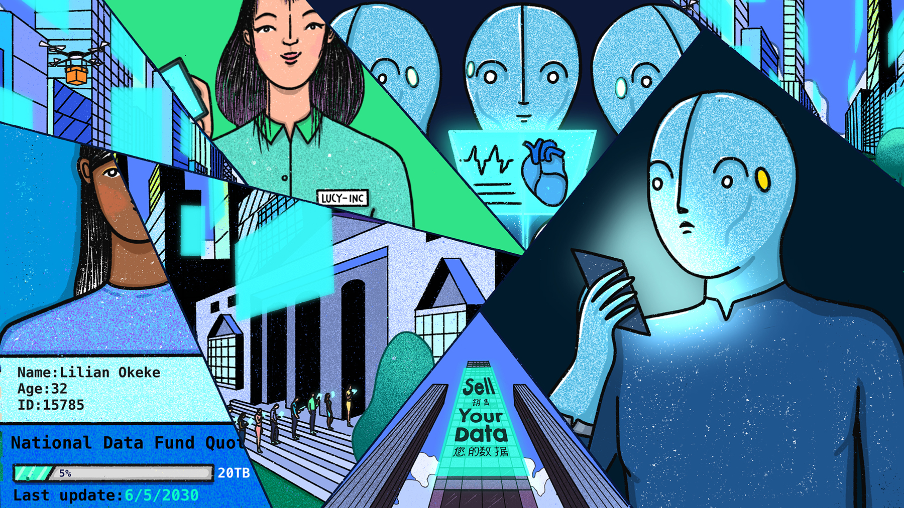
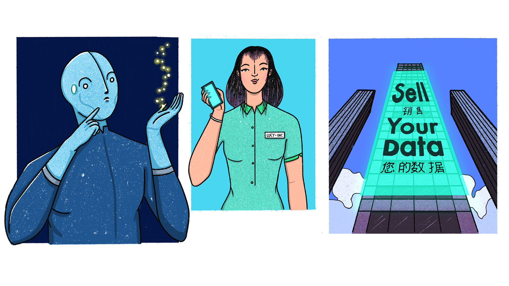
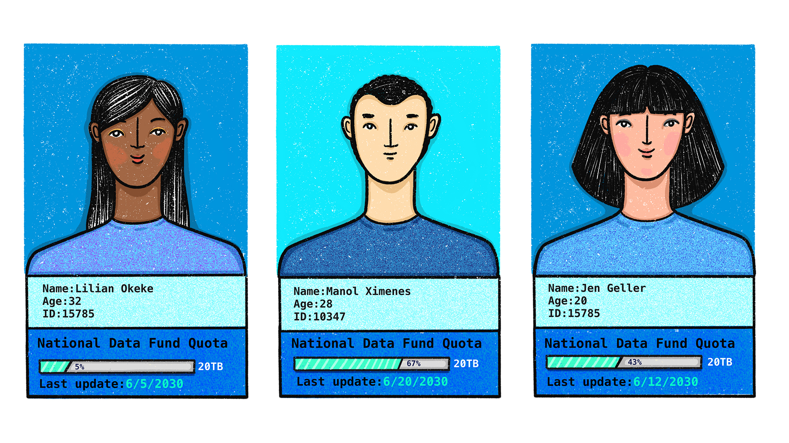

Dear reader,
I updated the Our Data Future website on 15 December 2019 to reflect the original post, initially published on 17 July 2019 as part of my Mozilla Fellowship with Privacy International. You can find the original post here.
As you step into the time machine with me, I'm also launching an open invitation for you to further engage with this project and help it reach a wider audience.
I need your creative spirit to write a comic book, a song, make an art exhibition, an animation or a short video. If this sounds like something you want to get involved in, drop me an email at valentinap@privacyinternational.org. I’d love to hear your ideas or to pitch you mine ;) More on how to get involved in this MozCast episode!
If you'd like to find out more about my work, I post regularly on Medium.
Our Data Future
Our digital environment is changing, fast. Nobody knows exactly what it’ll look like in five to ten years’ time, but we know that how we produce and share our data will change where we end up. We have to decide how to protect, enhance, and preserve our rights in a world where technology is everywhere and data is generated by every action. Key battles will be fought over who can access our data and how they may use it. It’s time to take action and shape our future.

Here’s where we start off
We are at a crossroads. We need to address challenges posed by technological choices made by governments and dominant companies – resulting in the erosion of privacy and the centralisation of power. There are also promising opportunities. We have fascinating technologies being developed. Legal safeguards are emerging still -- for instance in Europe people have a strong privacy rights embedded in the European Convention on Human Rights, and in the EU data protection rules are providing a new base standard for protections with GDPR. Courts across the world are responding to interesting challenges, whether India's ruling in 2016 on the right to privacy and Jamaica's on the identification system, and the U.S. on cell phone location data. Countries around the world are also strengthening data protection laws – today more countries have some form of data protection than don’t.
But most importantly, we have the power to unite and transform. The Internet and the future built upon it could be a collective of action-driven critical thinkers. We can change the course of our path. The future is not a given: our actions and decisions will take us where we want to go.
In today’s digital environment, here’s what we’re not OK with:
Data monopolies and surveillance
First, we don't like data monopolies. Big tech companies harvest our data on a massive scale, and exploit it for their own interests. They are the new feudal lords. They aspire to surveil, predict and automate our lives and societies.
Surveillance machines like Alexa and Google Assistant have entered into homes. They listen carefully to what we say, and they watch closely what we do.
Mobile devices and wearables travel with us everywhere we go, extracting and sharing data about our every footstep. Publicly and privately, we are being watched.
This is not just passive surveillance, it's active control over our lives and social structures. Companies predict our behaviour and infer our interests, potentially knowing us better than we know ourselves. They offer an illusion of choice, when in fact they can decide which information reaches us and which doesn't. They use dark patterns to discourage us from exercising our rights.
Things happening behind our backs
It’s not just the data we knowingly generate – such as photos or posts on social media – that gets harvested. It’s also the data we indirectly generate: our location history, browsing activity, what devices we use and lots more information that has been derived, inferred or predicted from other sources. For example, from my browsing patterns, companies can predict my gender, income, number of children, my shopping habits, interests and insights about my social life. While in many countries data protection laws allow me to access all the data that online tracking companies collect, in most other places, I can’t. But things are not that simple. Even in the places where I can access data about me, I first need to know which company is collecting data. It’s not a surprise that often I am unaware of the pervasive tracking. If I do find out, asking a company for access to data is not a trivial task. It might be full of obstacles and difficulties – some intentional, some because of bad design.
Restrictions on freedom of expression
Internet platforms limit our freedoms at an unprecedented scale. They monitor and decide what content is allowed on their apps and websites. They built algorithms that decide what content is allowed and what isn’t. What’s worse, in Europe, a new copyright law adopted in March 2019, forces the power on platforms to surveil, censor and dictate how we express and communicate with each other online.
"Free" services
We don’t believe in 'free' services anymore – we know our data is being exploited. Abusive data practices are used to track, target and influence our behaviour and opinions. In 2018, Cambridge Analytica showed us how this practice undermines democratic processes and weakens democracies.
This is not to say that the solution to "free" services is paying for privacy-enhanced products. Privacy should not be something you have to pay for. And companies offering 'free' services should not use them to mask data exploitation practices.
How? Here’s where our journey begins. Below are four possible future scenarios. They’re presented through the eyes of Amtis, a persona representing an everyday individual caught up in the digital challenges of the future.
Amtis travelled forward in time and found four different futures: one where data is treated like property and data markets are created; one where people are paid for data as labour; one where data is stored in nationalised funds; and one where users have clear rights concerning their data.
Here’s what I collected from Amtis’ diary. I’ve added some of my own reflections at the end of each chapter as well, just to spice things up a bit :)
I want to give special thanks to everybody who helped me shape and improve this project: My Privacy International and Mozilla colleagues, my fellow fellows Maggie Haughey, Slammer Musuta, Darius Kazemi and many other friends and wonderful people: Andreea Belu, Alexandra Ștefănescu, Lucian Boca, Josh Woodard, Philip Sheldrake, Christopher Olk, Tuuka Lehtiniemi, and Renate Samson.
Illustrations by Cuántika Studio (Juliana López - Art Director and Illustrator, Sebastián Martínez - Creative Director).
Copyediting by Sam DiBella.
This work is licensed under a Creative Commons Attribution-ShareAlike 4.0 International License.
Suggested citation: Our Data Future, by Valentina Pavel, former Mozilla Fellow embedded at Privacy International, project and illustrations licensed under CC BY-SA 4.0.
Scenario 1 – Data property

In 2030 Amtis finds a future where property rights for data were adopted. Here’s how this future plays out:
My data, my turf. This was the first graffiti I saw as I was walking down the street and I said to myself, “Yeah, big corp, we’re going to get you good!”. I am fed up with companies making insane amounts of money from my data. If this is the game we’re playing, I want my fair share.
I was not the only one thinking like this. A few years back there was a strong push towards adopting property rights for data.
I was on my way to see a data property consultant. I just got fired from my job and I desperately needed a way to survive in this city. There was a big queue in front of the consultancy firm, in a tall glass building with a huge advertisement on it: "Sell Your Data". The first meeting was free.
OK, I have property rights over data. Where do I start?
I decided to see a consultancy because I didn’t know what data property actually means. For example, can I rent my data? Can people now buy and sell data like on the stock market? Do I need a data broker to bid for me? How much money can I make from giving data to my day-to-day services? How much will my data be worth in the future? Can I leave it as an inheritance to my children?
What I am most interested in now is what’s the fastest way to profit. At the same time, I don’t want to be fooled like in the past with 'free services'. I may have lost my job, but I still have dignity left. I wouldn’t want my data to be used in any way companies please. Would I be able to set my own conditions?
Little money for a lot of data
While I was waiting for my turn at the consultancy, I received a notification that I had unlocked a special data payment feature on my social media platform. I was receiving this offer based on my location. The offer was valid only for people on the waiting list for this particular consultancy firm. They must be a hotshot company to have such personalised deals. I’m sure they receive a commission for this. They offered 0.50 units for every social interaction I made: post, uploaded photos, tagging people and objects, clicking on links. I just used the app as I normally do and in about 10 minutes I got close to earning 5 units – that’s about the price of a public transportation ticket. Not exactly a fortune, but in my situation, anything helps. I’m not sure if this is a one-off promotion or if they would offer the same reward tomorrow.
Credit backed by data
The social media company was also advertising data credits. They recently started operating like a bank. Their new product is a financial credit package which could be backed by data as collateral. Because data is seen as property, instead of guaranteeing to pay back the credit with my apartment or goods, I could vouch for it with my data. The company knew my exact identity, my financial transactions, but more importantly they knew my social behaviour, how trustworthy I was and how much my data could be worth. This sounds like a fast solution for my situation, but let’s see how the meeting with the consultant goes.
Full data scan for price simulations
It was almost dark when I finally entered the consultant’s office. The company had an entire floor of 'data officers'. They were basically sales people with programming skills. I was escorted to one of the data officers. She welcomed me and explained the first steps. In order to receive a full analysis of how much my data is worth, I needed to hand in my devices and wearables for data scanning. I was storing all my data locally for privacy reasons, but if I wanted to learn the entire worth of my data, I had to hand in the data.
Can’t get rid of "free" services
She also explained the privacy policy for this simulation. The data that’s extracted from my devices would be shared with my social media company and partners. This is why the first consultancy session is free. Without a job, I didn’t really have a choice. I would have to give in, even though I felt used. Despite the bitterness of compromise, I decided to continue.
While my data was scanned, she ran a virtual reality programme. She said the programme would walk me through the basics of data property and that I could ask all my questions in real time, receive feedback and get simulations based on the data analysis that was running in the background on my devices.
The question that bugged me the most was whether there was any way to know where my data travels and which partner companies and affiliates get their hands on it. Is there some kind of body where I can report data property abuses? And what will they do? In the case of physical property, I can imagine that if my bike is missing, I can report it to the police and maybe they will try to find it. If they don't find it, nobody will give me a new bike. The maximum that can happen is to receive compensation for the bike from an insurance company for example. But it's unlikely that I will ever get the same bike that I lost. Does the same apply for data property?
Tailor-made AI assistant for data transactions
At the end of the virtual programme, I could decide if I wanted her to programme a tailor-made AI assistant for my data transactions. For example, I could set up price alerts to see the best deals that companies offer for data batches, and I could also rent my data to different companies as a sort of subscription. The simulation explained everything for me:
Real-time bidding for selling data
To start, I learned how real-time bidding architectures for data work. First, you select which devices will join the bidding platform. Your devices are linked to your identity and everything generated from them is considered your property. And all the data generated from those devices feeds straight into a centralised platform. There are a number of companies registered with this bidding platform that will have access to your data after the transaction is completed. Once your data gets on the bidding platform, you can immediately auction it.
The AI assistant would help me set price ranges and tell me how others sold similar data points historically, what types of data transactions are trending, and which data are likely to be more profitable.
Time-locked subscriptions for data
As an alternative model, I could put my data in subscription offers to companies. I can ask my AI assistant to set the subscription price. Companies can buy the data subscription from me for a limited period of time. Start-ups in particular like this model because it ensures them a continuous stream of data. However, the downside is that as companies grow bigger or diversify their services, if my data becomes irrelevant to them, they can simply stop the subscription without explanation or notice.
Managing data transactions is overwhelming
The AI assistant was subscription-based. It wasn’t cheap, but not super expensive either. Given my condition, I couldn’t afford it. The consultant said they are partners with the social media company I frequently use, so she suggested that I apply for a credit for the assistant.
Of course, I could personally manage my data transactions without the assistant, but that would mean I have to do it full-time, read all the conditions and fine prints, make sure I am not being scammed and spend a lot of time hunting for the best deals. I am not even sure I would be able to understand all the terms.
In the end I made the credit and got the AI assistant. I added only a few parameters, so the data officer didn’t have much to programme and customise in my case. I desperately needed money, so my bar was really low. I hope the assistant will help me maximize the value of my data so that I can pay my credit in data in half the time.
As I was leaving the consultancy, I started listening to the World Data News Channel. There was an interview with a girl named Lucy. She was talking about how inspired she was by Jennifer Lyn Morone which came up with the concept of People Inc. Jennifer Lyn Morone was an art student when she incorporated herself as a business to protest against extreme capitalism. She believed that it was the only way to stop corporate exploitation. Jennifer Lyn Morone started the trend of Incorporated Persons and apparently she's been getting more and more followers. Lucy herself became a copycat.
From individuals to Incorporated Persons
The concept of Incorporated Persons basically assures that your identity, name, IP address and every bit of data you create is your company’s property. If others abuse your data or touch it without your permission, theoretically, you can sue them. People Inc. claim it’s an effective way to put a fence around your data. Human Corporations have leverage on data greedy companies. Also, if you want to make a profit, you can market all sorts of data services and products.
For example, if someone wants a picture taken with their friends in a pub or asks for advice where to eat in town, Jennifer Lyn Morone Inc. can offer this for a fee. And she can increase her efficiency in life too. She says: “If my friends and family became corporations I knew exactly who I would use and for what and I know who I would invest in, not only because of what they can do but because of who they are.”
It wasn’t exactly easy to start Your Name, Inc. You needed legal, entrepreneurial and technical skills to run your company. So this model was more popular with middle-class, educated people that were able to sustain this effort. In that part of the world, Human Corporations function in a totally different type of social dynamic.
I don’t know how you feel, but for me reading Amtis diary on data property was unsettling.
Here’s what I make out of this story on a more objective and legal level. If you're eager to read Scenario 2, click here.
Reflections on Scenario 1
Data property does not mean more or better control
Creating a new law that attaches property rights to data is problematic. Due to the nature of data and how it's used in practice, it is very doubtful whether you can have exclusive property rights over it. It’s not as simple as with material goods, where you either have them or you don’t. Data can be here and everywhere and can be copied and transmitted at almost zero cost. Therefore, there are limited barriers that can be exercised with property rights and exclusivity.
The general idea around property rights is for you to keep and enjoy that particular possession. Property usually comes from an approach of non-disclosure, not one where you want to disclose by default. If you decide to lease your property, the tenant is entitled to use and possess the property until the end of the agreement. In this case, there will be limited claims you can make as property owner during the renting period.
Also, consider homeowners’ associations. You may be able to buy a house, but you might need to get permission if you want to redesign your garden or change the paint colour. You can’t always do what you want, even if you do have property rights; they don’t automatically imply that you have absolute supremacy over what you possess. The same would mean for data property. Even if you have property rights over data, this will not necessarily mean you will have unlimited powers over it.
One-off transaction
Once you sell data, it’s a one-time transaction that can’t be simply reversed. Moreover, once you sell, the company can do whatever it wants with the data. There could be some conditions for selling, but do we expect people to have real negotiation power with companies? Privacy is also a time-shifted risk. What you might be fine revealing today might not be a good idea to share tomorrow. If you transfer your property rights over data to others, there is no real way to assure that the data won’t be abused. This argument is valid for all data property or data monetization scenarios and will come back in some sections of the Reflections below.
Data monopolies don’t die
Property rights don’t change the fact that companies can amass large batches of user data. Nor does it undo the fact that certain companies today have already done that - take for example companies like Facebook, Amazon, Netflix and Google.
Accomplices to the same broken model
We don’t know what the main digital revenue model will be in the future, but we know now that some of the biggest companies today rely on advertising. This means that every click or purchase that I make translates into money for them. The more clicks and products I buy, the more money they get from advertisers. In a system where I get paid for data, this means the more profitable companies are, the better paid I am. In other words, it’s actually in my interest for them to make more money, so that I get more in return. This feeds the same old game; it makes us accomplices to a broken system, one that we’re trying to move away from. Do we want to legitimise questionable market practices and data abuses for a few pennies?
What is it exactly that I own?
Amtis only briefly hinted at it, but I don’t think there is an easy consensus on what exactly I can own. Is it my bank and credit statement, my smart meter reading, my GPS coordinates? How about my picture with my friends and family? If they are in the picture, do they own it too? What happens with genetic data? It contains information about my family, so if I reveal it, will my family also have property rights over it? What about my future children and grandchildren, too? Data about me is also data about other people.
And what happens to the data about me that is generated without my knowledge? Would this be covered too?
Designing a system of data property rights would require a classification and inventory of all possible data types that can be owned, along with their state (e.g., data in transit, data in storage). Questions would include: What data do we assign property rights to? Is it data that is collected, or analysed, or aggregated, or data that is being profiled? Would data in transit be owned as well, or only data that is already stored somewhere? Could the same data have multiple owners?
Property is not compatible with the nature of data
Here’s a legal argument to keep in mind. Intellectual property rights may at first seem akin to data ownership, but there is a fundamental difference. For example, copyright law protects the original expression of an idea, not the idea or information itself. The colours that make a painting are not protected, but the original way in which they have been expressed can be. In the case of a Facebook post, the way I express myself can be protected by copyright, but I do not own each individual word that makes that post. However, in the case of data gathered by sensors there is no creative effort involved, it's raw data. When we are talking about data, we can’t say that we have intellectual property rights over it, because data is not protected per se, especially if there is no intellectual work behind it.
But let’s say we are doing something with the data. Let’s say we are collecting it in a database and this takes quite a lot of effort and resources. In the case of EU database law, the protection applies to the creation of the database, not the data entries themselves. More specifically, the resources invested in making the database are the object of protection, not the creation of a database in itself.
Similarly, if we discuss compilations (such as an anthology for example), which are generally protected under copyright law, the protection lies with the originality of selection and arrangement of information – it does not protect the individual elements that make the compilation.
Aside from this, there is more critique that can be addressed to intellectual property law. Authors are usually part of a long tail and receive only a small compensation for their work. There is a lot of power asymmetry between authors and the beneficiaries. Think for example of the music industry. Record labels generally get all the money and authors get paid last. Few authors have real negotiation power, good legal representation and the possibility to enforce their rights. That is why they earn more money through concerts than from their records.
On a more fundamental level, property rights are alienable, which means you can essentially transfer them from one person to the next. Human rights such as the right to privacy and data protection are inalienable. If you transfer them, they lose any meaning. What's the point of freedom if you renounce it? And what is more: if you sell data but want to keep some basic rights about the uses of that data, you are actually thinking about a rights-based approach, not a property one.
Data markets in practical terms
Let’s imagine we somehow figured out all the questions related to property. Then we still need to consider the practical aspects of a data market. Let’s say in a property system, some individuals would sell their data. Who is going to set the price? Based on what criteria? Am I going to have negotiation power in relationship to companies? How would the money actually be transferred in practice? Will I need to spend time brokering or auctioning data? Where would I go if I am not satisfied? Will I spend my time monitoring companies to make sure they actually respect the contractual agreement? Will I go to court if they don’t, and spend years awaiting a resolution (since court decision generally take a long time)? Also, how would consent be managed without producing decision exhaustion? Will we need to give instructions to our own bidding bots? Data property puts a lot of burden and responsibility on the individual to manage all data exchanges. Does this really mean more control?
Additionally, if I start selling data, companies would have little incentive to promote data transfers or portability from one service to the other, as they will be heavily invested in buying data. If we aren’t able to pull data from one company and move it to another in an easy way, we will just get trapped in the same corporate walled gardens of today. We won’t be able to complain to companies if we are dissatisfied. What’s more, start-ups and small companies would still rely on large investments to compete with big companies when buying data. Regulating licensing of data would be extremely difficult and start-ups would be loyal to their investors, not to innovation and/or social good.
And in the end, how many companies can actually afford to pay me money? Aside from a few well-known big tech companies, there are a zillion small companies that won’t have the resources to pay me. How would a property rights or data monetization system stop them from getting my data? And how will I know if they have my data or not? Who will enforce this? Will I be able to ask them if they have my data, like in Europe with the GDPR?
Scenario 2 – Data labour
In this next leap to year 2030, Amtis lives the life of a data labourer, being paid wages for data inputs. Here’s how Amtis begins the story:
I am in my green pyjamas, but I can’t say for sure if it’s morning or evening. My eyes are red from staring at screens. I am discouraged and very tired. Of course, all these emotions and reactions are registered by my Playbour – my pocket-sized smart console that has basically become my entire life. It’s my connection to family, friends and the world; my health and mood monitor; my life organiser and personal assistant and basically how I earn my living. It’s my Play and it’s my Labour.
These days, fewer and fewer people go to work in an actual office. Everything happens through this device, which captures the data I generate on different platforms and pays me for all these data inputs. But in reality, everything goes to one single company, as most of the other platforms are its partners or affiliates.
Shit money, literally
Last month I enabled the 'health' add-on on my console, so now it's counting how frequently I go to the toilet and it connects to the sensors in the toilet to collect data about my pee and my poop. This data is sent to pharmaceutical companies so they can make better drugs. Maybe I’ll help cure the world from urinary infections, prostate disorders, digestion problems and haemorrhoids. Every now and then I’m tempted to make a bad joke about shit money, but health data pays better than most other types, so I’ll shut up.
You know what else pays well? My 'entertainment' data. I get bonuses for more juicy data such as my heart rate, eyeball movement and amount of perspiration when I watch movies, listen to an audiobook, play games or read articles. Data associated with political media pay even better. After I learned that trick, my behaviour changed a lot. I am watching all the movies recommended in my Playbour, I am frenetically consuming clickbait articles, and trying to produce as much health-related data as possible. My life and actions are all about how well they pay.
One time I even took laxatives to get more 'results'. I was happy to see that I could trick the system, but after a few times I guess the algorithm detected a pattern and penalised me. It not only fined my account, but it also placed a ban in pharmacies so that I can’t buy laxatives. Now, if I really have a digestion problem, I am screwed!
Training the AI overlord
Not many people know what all this is for. Everything that gets captured by this device is meant to train the world’s most powerful AI system. Human input is used to teach this machine all we know, to help it evolve. The master plan is to transform it into an eternal collective extension of our humanity and train it to make better decisions for us. We’re already putting it in charge of our daily, routine decisions. More and more decisions from politicians and our government rely on this supermachine. Would the next step be to give it full control?
We’re giving away our ability to decide for ourselves and we are trusting the machine to govern our world. We are enslaving ourselves in order to feed it data, because that’s the best way to get paid these days. As people used to say: "Better to be exploited in a capitalist society than unemployed and destitute".
Both user and worker
People asked for data markets, so the data I contribute is now paid for as labour. I have full work documentation registered with the Playbour from the moment my first bit of data reached them. The interface of my console shows me how many tasks I have performed, the price that was paid for each, how many days off I am entitled to (calculated based on how hard-working I was) and what contributions go to my pension plan. It’s funny that I am a user of these platforms, but I am also their worker.
The Taskometer is the employer’s new evaluation metric
Every time a company needs something, there is a federated AI Manager that splits the task into smaller chunks and sends alerts to workers to complete it. You have to be very fast when this happens, to make sure you get the task - just like you did a decade ago with 'crowdsourcing markets'. More advanced versions of the Playbour have an AI that selects the jobs for you, instead of you doing this manually. But this version of the console is more expensive. I am saving up to buy one later. The thing is, if you don’t complete 100,000 micro tasks per month, you don’t get paid at minimum wage level per task. The system works like this: you get paid by the task, but the price varies depending on the total amount of tasks you complete. And there are certain thresholds, and some evaluation criteria such as the quality of data. So you can’t be sloppy. If you’re below 100,000 in your Taskometer, the price per task is so small that you can barely keep your head up. But hey, now we can no longer say there is fake unemployment. The Taskometer certifies my labour and evaluates my work.
Data labour unions
I tried to speak with some of the union leaders about raising those thresholds. We're counting on them to represent us and protect our labour rights, but data labour unions are still quite young and weak. There aren't many young labourers like me joining unions, many people associate them with the 'old way' of doing things and don't see any value in joining. All this time, unions have struggled to maintain relevance and to adapt to the digital space. But they didn't hold ground, so I am not sure if they can manage to put that much pressure after all.
Nobody escapes data exploitation
You might think that wealthier people got away in the data labour system. Actually, it’s more nuanced than that. It’s true that they could stay out of data labour and not hook their lives to a Playbour device - but they could not get away from sensors and tracking. The rich started building walled cities where nobody else could afford to live. The cities were sealed so that nobody outside their select group could come in. They used heavy surveillance infrastructure to achieve this. A truly smart city, some would say. And all the data produced by their houses, by their devices, by the sensors in their citadel, was captured by the AI overlord. They were as much trapped in the same AI ecosystem as everybody else, but they had the illusion of privacy and protection from the plebes.
Privacy for pennies
The "data sharing economy" and automated services have displaced countless jobs. Most people now sell every bit of their data for a few pennies each. We can now see the true face of this economy based on "sharing".
Here’s what I make out of this story on a more objective and critical level. If you want to jump straight to Scenario 3 click here.
Reflections on Scenario 2
It seems like monopolies cannot be combated through a data labour system. Monopolies don’t simply disappear, even if they start paying people wages - they adapt and persist. A market for data is complicated to achieve in practical terms, but there are other reasons why this model may not be what we are looking for.
A data labour system runs on people fuelling it with data from all possible sources. This deepens the gap between the poor and the rich and it encourages inequality. While the rich can afford not to sell their data, the rest will be vulnerable, exposed and would give in more quickly to exploitative systems. This looks much more like digital feudalism than individual empowerment.
But the discussion goes beyond inequality. In a future where data labour is used to feed and train AI services in all aspects of our lives – from decisions about how we govern ourselves, to our legal system, education and immigration – nobody will win in the long run.
And who knows, maybe in the near future machines will learn from each other and there will not be the need for people to train and feed them data. Machine to machine learning might replace the human input AI services rely on, but today, as a Google employee puts it, “Artificial intelligence is not that artificial; it’s human beings that are doing the work.”
More tracking means more money
It’s true that data labour might be able to solve the problem of indirect data (e.g., data about you that you don’t know is extracted). But I am not sure this is the solution we are looking for. As all human actions, emotions and by-products could be monetised or labelled as labour, there was no more need for people to ask for transparency. In Amtis’ story, people already knew that tracking and sensitive information would bring them more money. There are no more abuses and exploitative practices because we put a price tag on them and thus we acknowledged them provided them with legitimacy.
In the long run, platforms crave quality data
The future will indisputably bring more AI services. To build better AI services, you not only need more data, but you also need data of a certain quality. It’s safe to assume that most workers who participate in a data labour system will be from marginalized, disadvantaged or poor communities. They could generally provide ordinary data, but from a certain point onwards this will not be enough. There will be certain types of data labour tasks that require specific skill sets, which won’t be easy for just anybody to perform. In other words, more educated workers could contribute to a bigger number of tasks, while less knowledgeable workers could pick from only a limited number of assignments. And this will create discrepancies and inequality.
Privacy is a time shifted risk
Needless to add here, information that I am okay with sharing (or selling) today might get me in serious trouble tomorrow. Change of political regimes is probably the most obvious example. Remember in our not-so-distant history how totalitarian regimes asked you to declare your religion in official documents and then used this information to persecute? Or say you take a DNA test with a company. The police is already using DNA testing companies to find suspects.
Human beings instead of human doings
In the end, do we really want to monetize all aspects of our lives? Will this bring us well-being and social self-determination? Do we want to define ourselves by our data (generated for others) or by who we are? And more importantly, how can we make things better if everybody will still be looking for more financial gain? If we want to set ourselves up for a better future, we should probably look for ways to reduce wide-spread monetisation of our lives.
Scenario 3 – National Data Funds

In this third leap to 2030, Amtis sees that people have created national data funds where citizens and governments together own the data that is being generated by sensors or by the services people use.
Here’s how Amtis lives this time:
Smart commuto-mobile
In the busiest parts of the city there are no more cars. There are only special lanes for drones, houndopacks – fast robots that run like dogs to deliver packages, and smart commuto-mobiles – slim electric booths where you can sit on your way to work and look at your phone without being worried about the traffic. It’s pretty cool – you can check your emails, take phone calls, schedule meetings, listen to a podcast on the best route to work. The commuto-mobiles drive themselves and are connected to high resolution cameras installed all over the city, so they have 360 degree eyes of the road. This also means that every conversation you have while in the smart commuto-mobile is recorded and processed in real time by an AI Traffic Grid. This measure was introduced in order to ensure a high level of empathy in society. For example, if you get angry and raise your voice while talking in your commuto-mobile, the vehicle pulls over and gives you a 20 minute time out to cool off, while it plays music and guided meditation practices. I bet you wouldn’t like to have this happening before an important meeting you don’t want to be late for! There is no way you can hop back in and make it run until you have calmed yourself down. And it gets registered into your "good behaviour" record too! The AI Traffic Grid also has sensors that analyse your facial expression to determine emotions, your gestures to determine thought processes and intentionality, and your breathing patterns to determine your heart rate and anxiety level.
Employer knows if you worked during your commute
With the commuto-mobile, traffic is much faster and the risk of accidents is very low. Basically, while you are in your smart booth, you don’t need to worry about anything besides boosting your productivity. People started asking for this time to be included in their working hours. And why not? They jump from bed straight into their smart commuto-mobiles and get to work – who wants to lose time in traffic? This is precisely why the commuto-mobiles were brought to the market. The commuto-mobiles are connected to the Internet, and work reports are sent to employers to show exactly how you spent your time on your way to work. Everything gets recorded in the journey log anyway.
Data as a Service for the private sector
All the information that is generated from the city and the services we use is amassed into a big database that is managed by the government and citizens. This fund makes it easier for new companies that want to enter the market and need a lot of data. The idea is that if you want to use any of the datasets, you have to pay to get access. We’re calling this Data as a Service because it turns companies into the customers of our city. Access to these datasets is highly regulated and the more datasets you want to use, the more expensive it becomes. Also, depending on the sensitivity of the information, the price goes way up. For example, driving information is less expensive than health data. The money that the government receives from companies gets redistributed back to the people. This redistribution will be exactly the reason why the government will always seek new ways to collect more data, because they can use it to generate the revenue they need to maintain the 'smart' cities they have created.
The data is anonymised, so everything is safe and nothing can go wrong. Except re-identification of individuals from anonymised datasets can happen more easily than you think.
Individuals and researchers can also apply to get the data they need. If the project benefits the entire community, your idea can be subsidized by the government. Through these subsidies, smaller, independent companies started to run good services, and it became harder to maintain a monopoly position on the market.
We can build our own services
If there is a gap in the market, we can build the services that are missing ourselves. We have all the data at our disposal, and I think gradually this is what we are moving towards. However, for the moment these so-called 'collective services' are not that great. Most of them are not easy to use and look really, really 2000.
Here’s what I make out of this story on a more objective and critical level. If you’re excited to move to Scenario 4 click here.
Reflections on Scenario 3
Besides National Data Funds, there are many more models to explore. Data ownership can be addressed in a lot of ways. National Data Funds don't sound like a perfect solution, but they’re not destructive, either.
Governments will have more control
In the National Data Fund model, the government gets all the data we are generating. This means governments will also have more control. They will basically have every individual’s data and can infer patterns for masses, as well as behaviours and intentions. Will people still dare to protest when abuses happen? We all know how fragile democracies are and the risk of this turning into a techno-dictatorship is high. Around the world there are corrupt, oppressive and ruthless governmental regimes. And if they aren’t now, they could become one very easily.
We will need super advanced security measures to ensure that these databases are not leaked, hacked, or manipulated by foreign or domestic agents. Personal data will have to be anonymised, but research already shows we need to do a lot more to improve anonymisation techniques. And even so, handling anonymised data still can have a huge impact on individual lives because you can look at trends and control masses based on those insights.
Moreover, National Data Funds based on access permission implies a type of infrastructure that will potentially take a significant amount of time to build and will involve a lot of resources.
Trusting governments with all our data
It would be very complicated to put all the necessary checks and balances in place, and to make sure decisions are transparent, without hidden agendas or secret deals between governments and companies. Even if there are no bad intentions in the middle, government structures will still have to change drastically. Entire teams of technical specialists will have to assess proposals coming from companies and take steps to ensure that security measures are in place for preventing abuse. Proposals would also need ethical, sustainability and environmental checks – so a lot of talent needs to be added to government. The public sector needs to get way more attractive in terms of financial rewards for its specialists. Where would this money come from? Would the government be tempted to allow more companies access to data in order to build its budget? Or outsource core services? These are hard operational and strategic decisions to take. Will governments have the backbone to make the correct decisions? What if government interests are aligned with a company’s interests? Exploitative services should not be allowed in the first place, but preventing this from happening will require a total transformation of the mindset we operate in - more than just an independent body under civilian oversight.
Security for databases
Needless to say, having a centralised database as a single point of failure is a very bad idea. The database could potentially be decentralised to eliminate the central point of vulnerability, but technical challenges around decentralisation and data integrity are significant. When it comes to centralised databases, the Adhaar system in India shows us the massive implications around managing such a database.
No incentives for companies
One of the ideas for the National Data Funds is to ask companies to pay a share of their profit. Of course, there could be other models such as subscription fees, subsidised access, completely free access, access based on income, or a mix of these. Companies may be required to pay twice: once for getting access to the data and again for the profit that data generates. But we already see business models that deliberately run on losses (Uber, Amazon) in order to consolidate their position, kill competition and promote the regulatory framework that’s best for them. Will the National Data Fund model solve this problem? You don’t want to maximize the revenue of the companies using the fund, but at the same time, where are governments going to get the money from for all the costs involved with technical management, deliberation and social benefit analysis?
A lot of uncertainties
There are many more questions to think about. For example, by default will everybody’s data be captured? Is there a possibility not to contribute to the fund? And if I don’t contribute, will I be able to freely operate and participate in society without major negative consequences? There is also a lot to discuss about how this data pool is managed and how decisions are made by both governments and citizens. Will every point of view have the same weight? How can we make sure citizens will not be threatened, pressured or forced to vouch for certain decisions? Also, what happens if a company gets access to a database, but then misbehaves? Even if you cut their access to the database, the damage is already done, potentially harming millions. What will be the measures to ensure that the risks of abuses are mitigated?
Scenario 4 – Data rights
This time, Amtis travels to year 2030 to get a sense of how the data rights framework played out:
I just moved into a new apartment and everything was a mess. My stuff was all over the place and I couldn't find anything. I received a notification on my dashboard that a delivery drone had arrived with my package.
Data rights dashboard
The dashboard showed me a summary report with information about how my data was handled: which company processed my order, the type of data that was collected about me, why it needed that information, and who this information was shared with. I am getting more and more 'clean' reports nowadays, but ten years ago it was overwhelming to see these notifications. Few companies were good at implementing privacy minded data operations, and I didn't feel like I really had a choice about what to do with my data.
Something that pushed companies to be more serious about data protection was the fact that the dashboard could communicate with the regulator’s enforcement systems. Any time there was mistreatment of data, I would receive a notification which I could decide to forward to my regulator. I did that a lot of times! Regulators are more resourceful than they used to be, so when they receive notifications, they would start an investigation.
Machine-readable privacy policy
I like the data rights dashboard because it saves me a lot of time. Before I made the order, it scanned the machine-readable privacy policy and terms and conditions and showed me a summary report of all relevant provisions related to how my data was being handled. It analysed both the companies that were selling the kitchen appliances I need for my new flat, but also the terms of the platforms the companies used to sell the products. The best part was that the summary didn't just rely on what the privacy policies said. It also queried an official public database to see if there are any investigations related to the product I ordered. Additionally, it performed a deep search for any public information related to the product I wanted, to see if there were known breaches or news scandals connected to the product or to the company. I was shocked when I discovered that a team of investigative tech-journalists had revealed that the Smart Vacuum - which I was initially tempted to buy - automatically sent the blueprints of my house together with metadata to a foreign intelligence agency!
Data portability
What I am most grateful for nowadays is that I can easily move my data from one company to another. When I moved to the new place, I transferred all my utilities to the new address with a click of a button. I kept my rates and didn't have any headaches for moving my subscriptions from one place to the other.
In case I don't like a company's services anymore, or they change their terms and conditions, I can move to a different company without second thoughts. Data portability allows me to pull all my data from one company and move it to another.
I think that's very healthy. Smaller companies used to be cut off from the market simply because they couldn’t get enough data and customers. With data portability, this challenge is more manageable. Their major task is to convince people to trust them with their data and not to give them strong reasons to leave.
Open Hardware
My new apartment was empty when I moved in so I needed furniture. 3D printed furniture is a big thing now. You can find a 3D printing shop literally at almost every corner. I went down to my neighborhood's 3D printing shop to browse their catalogue. I needed an ergonomic desk.
To my surprise, they were not doing only furniture. They have a separate line only for open hardware - anything from kettles, fridges and washing machines to cameras, audio systems and laptops. They were advertising an Open Hardware phone. The guy from the shop showed me how it works. You basically choose all the spare parts you want and they assemble the model for you.
I went ahead and looked at the documentation for all the spare parts. It wasn't easy to understand all the blueprints of the different components and how everything fit together. I tried to make sense of it, but in the end I paid for technical consultancy at the shop before making the order. The phone I ordered is made out of 3D-printed material: it's 100% durable and recyclable material! And it's sooo cheap, I can't believe it! I just became the biggest fan of open hardware! These products are transparent, highly customisable for any privacy needs, sustainable and affordable.
People's Digitalopoly
Doing some research into this, I found out that the Open Hardware phone was prototyped during a futurathon. Futurathons are self-organised meetings run by a grassroots movement of engineers, artists, philosophers, journalists, youth, economists, lawyers, policy makers, environmentalists, and LGBTIAQ+. Years back, they started to design different bits and pieces of a new architecture based on strong, enforceable rights over data. Their goal was to design the People's Digitalopoly - a new digital world, which is not based on financial gains, but on social contribution and civic participation. They believed in a model which empowers people with autonomy over data and new ways of looking at our relationship to data.
I was intrigued by their vision and I basically spent the entire rest of the day reading their manifesto. I also discovered some of the first transcripts of their meetings where they were saying that put their bet on the data rights model. They realised very early on that the true potential of the data rights model could only be achieved with open protocols and interoperability. From that time, they spent ten years of hard work to develop the Web3 open protocols.
Big vision: Connect the decentralised with the centralised
Once the protocols were stable and reliable, the big vision was to connect decentralised services among themselves, but also with closed systems. They believed everybody should be able to run their own chat applications, but at the same time to communicate with others on closed services. The idea was for everything to be possible in the same place, irrespective of the centralised, distributed or decentralised architectures. This left me thinking about how easy it would be for me to use such an interconnected digital ecosystem and what it would mean for the way I live and do business.
Reflections on Scenario 4
Amtis' story brings a bold vision. Open protocols and decentralised systems create a new universe of possibilities. Groups have been running peer-to-peer networks for a long time, but decentralised file storage and moving towards a decentralised web, will change the way we look at data structures.
However, the most important lesson we need to understand is that there is no one size fits all. There are always going to be different enclaves. People will organise themselves in different ways for different needs. We need a system that allows for these differences. There is no reason why different models shouldn't be able to speak to one another. Nobody needs to be left out.
We also need to acknowledge that as much as devices and technology become cheaper, there are still going to be many people below the poverty line who won't be able to afford them. Amtis could pay for technical consultancy and order a privacy enhanced phone, but not everybody is going to be able to do the same. As mentioned in previous sections, privacy should not be a right only the rich or more resourced people can enjoy.
The data rights environment does not function in isolation. It seeks to provide people choice and agency over data; it doesn't mean shutting off from the world in a 'safe' bubble. It is an autonomous, fully interoperable architecture with built-in protection. It uses strong cryptographic mechanisms and anonymisation techniques to protect both individual privacy, but it also enables us to extract social benefits from collective data.
Fierce enforcement, open standards and interoperability protocols are key components of the data rights model. Strong protection mechanisms cannot rely on the individual having to make decisions at every step of the data flow. Protection needs to be ensured regardless of whether people know how to protect their data or not.
That's why decentralised privacy-aware, censorship-resistant protocols are essential. Amtis used a data rights dashboard for analysing privacy policies and to manage orders from companies that take privacy into account. As much as this sounds like a good tool, individuals shouldn't be forced to turn themselves in data vigilantes and be alert each time companies want to collect data from them. Also, it's not a good idea to rely on a device that's so intimately connected to your daily activities. In Amtis' case, we should be concerned about the producer of the data rights dashboard and how vulnerable it might be to attacks. Could this device be used for mass surveillance purposes? Who is making this device and its security measures?
Data portability not only offers the possibility for people to move their data from one service to another, it also gives startups and small companies a chance to compete on the market. Their challenge is reduced because people can choose to move data to their service. However, companies can come up with all sorts of tricks to attract people to their platform such as profiling, microtargeting or paying them for their data to join. Critics say that as long as we continue to encourage the market economy, a data rights system can only do damage control. A data rights system can only reach its true potential if other types of mechanisms and incentives are in place; and there are more options to explore.
More work needs to be done. Data captured by sensors and the vulnerabilities of IoT (Internet of Things) are a growing concern. We're far from solving Artificial Intelligence systems and we haven't even begun to seriously address biotech - which opens up an entire new dimension of challenges at an unprecedented level of moral, ethical, societal and evolutionary complexity.
All in all, we can still improve the data rights model, but it's the closest we have to a healthy, empowering and balanced architecture.
To wrap up
Data rights as a part of a comprehensive system of protection
Stepping out of the scenarios and grounding ourselves again in today’s realities, people are increasingly aware and angry about how data is harvested by data monopolies. We are disempowered: we have lost control over the data we are generating, and we are becoming more aware of exploitative practices. In order to address the power imbalances that plague our digital sphere, I believe we need a system that provides individuals with clear, direct authority over their data. One that allows us to set the boundaries we want for our private space. But at the same time, we also need a system that enables us to extract the collective benefit from data.
A data rights system allows us to access, change, move or delete data; to know who’s collecting it, where it’s being stored, where it’s going, who has access to it, and for what purposes. Data rights cover both data that I voluntarily generate, but also data that is automatically collected or inferred about me. This includes location and browsing history, but also information that has been derived, inferred or predicted from other sources. In that sense, a data rights system offers a much more comprehensive architecture of control and protection than ownership. That’s why, when appropriate control rights are in place, we essentially don’t need property rights. It is true though that this model puts more responsibility on the user, to manage and take informed decisions about what data goes where.
However, principles such as data minimisation, fairness and purpose specification - if meaningfully implemented - have a strong chance to reverse this burden on the user. Privacy will not depend on how knowledgeable, informed or skilled the individual is, but on how well companies comply with their protection obligations. This way the individual will not be the weakest link, having to struggle to understand all the complexities. Instead, companies design processes and data flows with privacy principles in mind, which reduce the need for individuals to invest time and effort to understand how to protect their data but at the same time respecting agency and autonomy. Data rights are not the substitute for proactive implementation and protection.
On its own, a data rights system is not enough, it needs to be reinforced by protection principles and clear legal obligations for all the actors involved. Coupled with a strong technical and enforcement layer, the potential of the data rights architecture is enormous.
Choice and transparency on top of well-designed data processes
A data rights system also places a higher burden of responsibility on organisations. Data rights demand that organisations create a secure and protected environment for data processing and adopt a very transparent set of rules. Data processes will be built to comply with the principles of privacy-by-design and by default and data minimisation from the outset. Protection is at the core and data needs to be collected in a meaningful and transparent way. Organisations also need to invest in data portability so that data can be easily moved from one service to another - the same way phone numbers can be ported between different telecommunications operators.
Data rights offer a solid framework. They are the backbone of a healthy society, where individual empowerment and collective well-being is paramount. We need to advance and strengthen this architecture of rights with vigilant watchdogs and new socio-economic rationales — the muscles that keep the system in check. We need well-designed data processes and user-friendly data portability — the skin that ties everything together.
If enforced, data rights would challenge the business models of tech giants. They would have to rethink their business philosophy and redesign their business processes to implement privacy thorough operations. Instead of allowing data exploitation, meaningful enforcement would lead to a diversification of offers in the digital markets and more, genuine choice for individuals.
Develop new language
In my view "data ownership" fails to address the main challenges of today’s digital economy. Ownership certainly doesn’t capture the full spectrum of related issues. An ownership system, even though it sounds like a good idea, is incapable of stopping exploitative data practices and monopolies on its own - it would simply allow them to adapt and persist. If we keep our focus primarily on figuring out data ownership, we face the risk of sidetracking the discussion onto a very questionable path. This is an open invitation to develop new language for clearer conversations and to better shape our demands for the future we want to see.
I believe the potential for the data rights architecture is huge, and there are many models to explore. Amtis' next journey is for you to imagine.
Next steps
How do you see YOUR future? Tell us your first step for shaping it.
Don’t know exactly what your first step should be? Here are some suggestions:
Elections around the world are coming up. Ask candidates what role they think data plays in the future. If you see a lack of foresight, engage in a deeper discussion with them. Make them listen and use the scenarios to explain how things might go wrong.
Start a data rights hub in your community. There are a few discussion forums that are dedicated to thinking about what happens next and how to address our data challenges. For example, check out the My Data community and the ResponsibleData.io mailing list where you can engage in conversations on the themes discussed in the scenarios.
Your creative skills are needed for spreading the data discussion more broadly. Reach out to valentinap@privacyinternational.org if you want to contribute to building a toolkit to make it easier for your friends, your neighbours and the world to engage with the topic. We would all benefit from sharing this topic with more communities!
This work is licensed under a Creative Commons Attribution-ShareAlike 4.0 International License.
Suggested citation: Our Data Future, by Valentina Pavel, former Mozilla Fellow embedded at Privacy International, project and illustrations licensed under CC BY-SA 4.0.